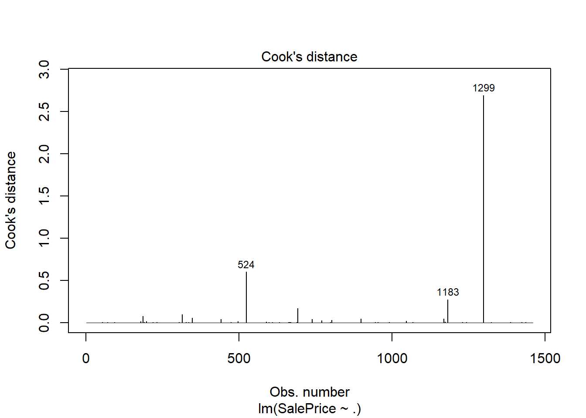

library(tidyverse) # used for dataframe manipulation
library(forcats) # functions for categorical variables
library(simputation) # for imputing NAs
#library(dlookr) # for detecting skewness
#library(bestNormalize) # for normalizing skewed data
#library(h2o) # for model buildingKaggle Housing Prices Competition
R
machine learning
How I achieved a top 2% ranking.
Purpose
This notebook was written to document the steps and techniques used to achieve a top 2% ranking on Kaggle’s housing prices competition.
Import Libraries
This notebook uses the following packages. Commented out packages are used later in the notebook but are not explicitly loaded into the namespace.
Import Data
I downloaded the training and test sets locally just because, so here I read the files and combine them into one data frame. I didn’t use the test set for anything other than identifying all of the possible factor levels, and combining the data sets made that task easier.
ames_train = read.csv("train.csv", stringsAsFactors = F)
ames_test = read.csv("test.csv", stringsAsFactors = F)
ames = bind_rows(ames_train %>% mutate(data = 'train'),
ames_test %>% mutate(data= 'test'))Identify and Correct Feature Types
Next, I convert character columns to factors and get a list of the factor names. The MSSubClass feature is numeric, but after reading the data description, it really should be a factor. It also doesn’t make sense to leave MoSold as a number since February isn’t two times greater then January. I also will convert YrSold to a factor, but not yet since I’ll do some math with it first.
ames = ames %>% mutate_if(is_character, as_factor)
# convert from number to factor
ames$MSSubClass = as.factor(ames$MSSubClass)
ames$MoSold = as.factor(ames$MoSold)Numeric Features
I’ll start with the numeric features, which have quite a few missing values. My strategy for replacing the NAs is in the code comments.
# impute NAs as a function of LotArea grouped by Neighborhood
ames = impute_median(ames, LotFrontage ~ Neighborhood)
# replace NAs with 0
ames[is.na(ames$MasVnrArea), 'MasVnrArea'] = 0
ames[is.na(ames$BsmtFinSF1), 'BsmtFinSF1'] = 0
ames[is.na(ames$BsmtFinSF2), 'BsmtFinSF2'] = 0
ames[is.na(ames$BsmtUnfSF), 'BsmtUnfSF'] = 0
ames[is.na(ames$TotalBsmtSF), 'TotalBsmtSF'] = 0
ames[is.na(ames$BsmtFullBath), 'BsmtFullBath'] = 0
ames[is.na(ames$BsmtHalfBath), 'BsmtHalfBath'] = 0
ames[is.na(ames$GarageCars), 'GarageCars'] = 0
ames[is.na(ames$GarageArea), 'GarageArea'] = 0
ames[is.na(ames$GarageYrBlt), 'GarageYrBlt'] = 0With the NAs taken care of, I created new features that I thought might improve the model performance.
ames = ames %>% mutate(
TotalPorchSF = OpenPorchSF + EnclosedPorch + X3SsnPorch + ScreenPorch + WoodDeckSF,
Baths = FullBath + 0.5*HalfBath + BsmtFullBath + 0.5*BsmtHalfBath,
AgeWhenSold = YrSold - YearBuilt,
AgeOfRemodel = YrSold - YearRemodAdd,
TotalWalledArea = TotalBsmtSF + GrLivArea,
TotalOccupiedArea = TotalPorchSF + TotalWalledArea,
OtherRooms = TotRmsAbvGrd - BedroomAbvGr - KitchenAbvGr,
LotDepth = LotArea / LotFrontage,
TotalSF = TotalBsmtSF + X1stFlrSF + X2ndFlrSF,
)Now that I’m done with mathematical operations using YrSold , I convert it to a factor.
ames$YrSold = as.factor(ames$YrSold)Next, I find the features that contain the same value in more than 99.5% of the observations. These will provide virtually no information to help explain why SalesPrice varies, so I drop the features. Turns out there’s just one: PoolArea.
(to_drop <-
colnames(ames)[which(ames %>%
summarize(across(1:ncol(ames), ~.==0)) %>%
colSums() / nrow(ames) > 0.995)])[1] "PoolArea"ames = ames %>% select(-all_of(to_drop))The last step is to normalize the numeric features that have a skewed distribution.
Categorical Features
The first step for the categorical features is to replace the NAs using the following strategy:
MSZoning: impute missing values using k-nearest neighbors grouped byMSSubClass.Exterior1stthroughSaleType: these each have only one missing value, so I impute missing values using the mode. Oddly, R doesn’t have a built-in mode function, so I wrote my own.All others: replace missing values with a new level.
# impute missing MSZoning values using KNN grouped by MSSubclass
ames = impute_knn(ames, MSZoning~. -SalePrice | MSSubClass)
# replace with mode of feature
Mode <- function(x) {
ux <- unique(x)
return(as.character(ux[which.max(tabulate(match(x, ux)))]))}
ames$Exterior1st = forcats::fct_explicit_na(ames$Exterior1st, Mode(ames$Exterior1st))
ames$Exterior2nd = forcats::fct_explicit_na(ames$Exterior2nd, Mode(ames$Exterior2nd))
ames$Electrical = forcats::fct_explicit_na(ames$Electrical, Mode(ames$Electrical))
ames$KitchenQual = forcats::fct_explicit_na(ames$KitchenQual, Mode(ames$KitchenQual))
ames$Functional = forcats::fct_explicit_na(ames$Functional, Mode(ames$Functional))
ames$SaleType = forcats::fct_explicit_na(ames$SaleType, Mode(ames$SaleType))
# replace other missing NAs
ames$Alley = forcats::fct_explicit_na(ames$Alley, 'Missing')
ames$MasVnrType = forcats::fct_explicit_na(ames$MasVnrType, 'None')
ames$GarageType = forcats::fct_explicit_na(ames$GarageType, "None")
ames$MiscFeature = forcats::fct_explicit_na(ames$MiscFeature, na_level="Missing")
ames$Fence = forcats::fct_explicit_na(ames$Fence, 'None')Quite a few of the categorical features are Likert-scale responses, so I convert them to integers and group levels when there are less than five. Also, h2o, which I later use for model building, doesn’t recognize R’s ordered factor data type, so integers it is.
ames = ames %>% mutate(ExterQual = case_when(ExterQual == 'Fa' ~ 1,
ExterQual == 'Po' ~ 1,
ExterQual == 'TA' ~ 2,
ExterQual == 'Gd' ~ 3,
ExterQual == 'Ex' ~ 4))
ames = ames %>% mutate(ExterCond = case_when(ExterCond == 'Po' ~ 1,
ExterCond == 'Fa' ~ 1,
ExterCond == 'TA' ~ 2,
ExterCond == 'Gd' ~ 3,
ExterCond == 'Ex' ~ 3))
ames = ames %>% mutate(BsmtQual = case_when(is.na(BsmtQual) ~ 0,
BsmtQual == 'Fa' ~ 1,
BsmtQual == 'TA' ~ 2,
BsmtQual == 'Gd' ~ 3,
BsmtQual == 'Ex' ~ 4),
BsmtCond = case_when(is.na(BsmtCond) ~ 0,
BsmtCond == 'Po' ~ 1,
BsmtCond == 'Fa' ~ 1,
BsmtCond == 'TA' ~ 2,
BsmtCond == 'Gd' ~ 3,
BsmtCond == 'Ex' ~ 4),
BsmtExposure = case_when(is.na(BsmtExposure) ~ 0,
BsmtExposure == 'No' ~ 1,
BsmtExposure == 'Mn' ~ 2,
BsmtExposure == 'Av' ~ 3,
BsmtExposure == 'Gd' ~ 4),
BsmtFinType1 = case_when(is.na(BsmtFinType1) ~ 0,
BsmtFinType1 == 'Unf' ~ 1,
BsmtFinType1 == 'LwQ' ~ 2,
BsmtFinType1 == 'Rec' ~ 3,
BsmtFinType1 == 'BLQ' ~ 4,
BsmtFinType1 == 'ALQ' ~ 5,
BsmtFinType1 == 'GLQ' ~ 6),
BsmtFinType2 = case_when(is.na(BsmtFinType2) ~ 0,
BsmtFinType2 == 'Unf' ~ 1,
BsmtFinType2 == 'LwQ' ~ 2,
BsmtFinType2 == 'Rec' ~ 3,
BsmtFinType2 == 'BLQ' ~ 4,
BsmtFinType2 == 'ALQ' ~ 5,
BsmtFinType2 == 'GLQ' ~ 6))
ames = ames %>% mutate(HeatingQC = case_when(HeatingQC == 'Po' ~ 1,
HeatingQC == 'Fa' ~ 1,
HeatingQC == 'TA' ~ 2,
HeatingQC == 'Gd' ~ 3,
HeatingQC == 'Ex' ~ 4))
ames = ames %>% mutate(KitchenQual = case_when(is.na(KitchenQual) ~ 0,
KitchenQual == 'Fa' ~ 1,
KitchenQual == 'TA' ~ 2,
KitchenQual == 'Gd' ~ 3,
KitchenQual == 'Ex' ~ 4))
ames = ames %>% mutate(Functional = case_when(is.na(Functional) ~ 0,
Functional == 'Sev' ~ 1,
Functional == 'Maj2' ~ 1,
Functional == 'Maj1' ~ 2,
Functional == 'Mod' ~ 3,
Functional == 'Min2' ~ 4,
Functional == 'Min1' ~ 5,
Functional == 'Typ' ~ 6))
ames = ames %>% mutate(FireplaceQu = case_when(is.na(FireplaceQu) ~ 0,
FireplaceQu == 'Po' ~ 1,
FireplaceQu == 'Fa' ~ 2,
FireplaceQu == 'TA' ~ 3,
FireplaceQu == 'Gd' ~ 4,
FireplaceQu == 'Ex' ~ 5))
ames = ames %>% mutate(GarageFinish = case_when(is.na(GarageFinish) ~ 0,
GarageFinish == 'Unf' ~ 1,
GarageFinish == 'RFn' ~ 2,
GarageFinish == 'Fin' ~ 3))
ames = ames %>% mutate(GarageQual = case_when(is.na(GarageQual) ~ 0,
GarageQual == 'Po' ~ 1,
GarageQual == 'Fa' ~ 1,
GarageQual == 'TA' ~ 2,
GarageQual == 'Gd' ~ 3,
GarageQual == 'Ex' ~ 3))
ames = ames %>% mutate(GarageCond = case_when(is.na(GarageCond) ~ 0,
GarageCond == 'Po' ~ 1,
GarageCond == 'Fa' ~ 2,
GarageCond == 'TA' ~ 3,
GarageCond == 'Gd' ~ 4,
GarageCond == 'Ex' ~ 4))As with the numeric features, I don’t want to have a factor level that appears in less than 0.5% of the data, so for each feature, I lumped them into a single level.
factor_cols = colnames(ames %>% select_if(is.factor))
for (fac in factor_cols){
ames[ , fac] = fct_lump_prop(ames[, fac], prop=0.005)
}Then I created a couple of new categorical features to describe total garage and exterior quality. I tried several other new categorical features but they turned out to not be useful.
ames$TotalGarageQual = ames$GarageQual * ames$GarageCond
ames$TotalExteriorQual = ames$ExterQual * ames$ExterCondUnusual Observations
The final step was to identify and drop unusual observations from the training data set. I took a simple approach of fitting a linear model to the numeric features and dropping the observations with a Cook’s distance > 0.5.
df = ames %>% filter(data=='train') %>% select(-all_of(factor_cols))
df.lm = lm(SalePrice ~ ., data=df)
plot(df.lm, which =4)
ames = ames %>% filter(!Id %in% c(524, 1299))A final scrub of the features revealed that four more features whould be dropped. Id is just the the row number, so of no use. The other three contained a single level that dominated the feature, just not at the 99.5% threshold I used earlier. I then split the data back into separate training and test sets. I also noticed that the response variable distribution was a little skewed, so transformed it using the log of the response.
I used h2o’s automl() function to fit an array of distributed random forests, gradient boosted machines, and generalized linear models and also fit some ensembles models.
# View the AutoML Leaderboard
lb <- aml@leaderboard
print(lb, n = nrow(lb)) model_id rmse
1 StackedEnsemble_AllModels_5_AutoML_1_20230107_151850 0.1090471
2 StackedEnsemble_BestOfFamily_6_AutoML_1_20230107_151850 0.1096486
3 GLM_1_AutoML_1_20230107_151850 0.1115843
4 StackedEnsemble_BestOfFamily_5_AutoML_1_20230107_151850 0.1139575
5 GBM_grid_1_AutoML_1_20230107_151850_model_110 0.1152473
6 StackedEnsemble_AllModels_4_AutoML_1_20230107_151850 0.1158410
7 GBM_grid_1_AutoML_1_20230107_151850_model_9 0.1162387
8 GBM_grid_1_AutoML_1_20230107_151850_model_2 0.1162969
9 GBM_grid_1_AutoML_1_20230107_151850_model_94 0.1166485
10 GBM_grid_1_AutoML_1_20230107_151850_model_3 0.1169748
11 GBM_grid_1_AutoML_1_20230107_151850_model_86 0.1169892
12 GBM_grid_1_AutoML_1_20230107_151850_model_438 0.1170218
13 GBM_grid_1_AutoML_1_20230107_151850_model_17 0.1173042
14 GBM_grid_1_AutoML_1_20230107_151850_model_7 0.1173681
15 GBM_grid_1_AutoML_1_20230107_151850_model_422 0.1175711
16 GBM_grid_1_AutoML_1_20230107_151850_model_408 0.1175834
17 GBM_grid_1_AutoML_1_20230107_151850_model_24 0.1178453
18 GBM_grid_1_AutoML_1_20230107_151850_model_373 0.1179245
19 GBM_grid_1_AutoML_1_20230107_151850_model_322 0.1179522
20 GBM_grid_1_AutoML_1_20230107_151850_model_443 0.1180286
21 GBM_grid_1_AutoML_1_20230107_151850_model_425 0.1180355
22 GBM_grid_1_AutoML_1_20230107_151850_model_396 0.1182284
23 GBM_grid_1_AutoML_1_20230107_151850_model_137 0.1183809
24 GBM_grid_1_AutoML_1_20230107_151850_model_77 0.1183904
25 GBM_grid_1_AutoML_1_20230107_151850_model_148 0.1184247
26 GBM_grid_1_AutoML_1_20230107_151850_model_134 0.1186361
27 GBM_grid_1_AutoML_1_20230107_151850_model_306 0.1186485
28 GBM_grid_1_AutoML_1_20230107_151850_model_437 0.1186888
29 GBM_grid_1_AutoML_1_20230107_151850_model_80 0.1187534
30 GBM_grid_1_AutoML_1_20230107_151850_model_299 0.1188249
31 GBM_grid_1_AutoML_1_20230107_151850_model_424 0.1188753
32 GBM_grid_1_AutoML_1_20230107_151850_model_406 0.1188842
33 GBM_grid_1_AutoML_1_20230107_151850_model_326 0.1189857
34 GBM_grid_1_AutoML_1_20230107_151850_model_351 0.1189945
35 GBM_grid_1_AutoML_1_20230107_151850_model_378 0.1190406
36 GBM_grid_1_AutoML_1_20230107_151850_model_103 0.1190937
37 GBM_grid_1_AutoML_1_20230107_151850_model_312 0.1191472
38 GBM_grid_1_AutoML_1_20230107_151850_model_55 0.1192192
39 GBM_grid_1_AutoML_1_20230107_151850_model_361 0.1192365
40 GBM_grid_1_AutoML_1_20230107_151850_model_332 0.1192726
41 GBM_grid_1_AutoML_1_20230107_151850_model_38 0.1192958
42 GBM_grid_1_AutoML_1_20230107_151850_model_307 0.1193006
43 GBM_grid_1_AutoML_1_20230107_151850_model_1 0.1194439
44 GBM_grid_1_AutoML_1_20230107_151850_model_364 0.1194659
45 GBM_grid_1_AutoML_1_20230107_151850_model_464 0.1194850
46 GBM_grid_1_AutoML_1_20230107_151850_model_321 0.1195640
47 GBM_grid_1_AutoML_1_20230107_151850_model_453 0.1196313
48 GBM_grid_1_AutoML_1_20230107_151850_model_379 0.1196660
49 GBM_grid_1_AutoML_1_20230107_151850_model_444 0.1196905
50 GBM_grid_1_AutoML_1_20230107_151850_model_432 0.1197222
51 GBM_grid_1_AutoML_1_20230107_151850_model_63 0.1197235
52 GBM_grid_1_AutoML_1_20230107_151850_model_350 0.1197255
53 GBM_grid_1_AutoML_1_20230107_151850_model_28 0.1197600
54 GBM_grid_1_AutoML_1_20230107_151850_model_337 0.1198299
55 GBM_grid_1_AutoML_1_20230107_151850_model_67 0.1198894
56 GBM_grid_1_AutoML_1_20230107_151850_model_345 0.1199082
57 GBM_grid_1_AutoML_1_20230107_151850_model_315 0.1199434
58 GBM_grid_1_AutoML_1_20230107_151850_model_319 0.1199490
59 GBM_grid_1_AutoML_1_20230107_151850_model_34 0.1199717
60 GBM_grid_1_AutoML_1_20230107_151850_model_449 0.1200064
61 GBM_grid_1_AutoML_1_20230107_151850_model_84 0.1201676
62 GBM_grid_1_AutoML_1_20230107_151850_model_113 0.1201708
63 GBM_grid_1_AutoML_1_20230107_151850_model_458 0.1202099
64 GBM_grid_1_AutoML_1_20230107_151850_model_355 0.1202636
65 GBM_grid_1_AutoML_1_20230107_151850_model_46 0.1202725
66 GBM_grid_1_AutoML_1_20230107_151850_model_20 0.1202747
67 GBM_grid_1_AutoML_1_20230107_151850_model_304 0.1203204
68 GBM_grid_1_AutoML_1_20230107_151850_model_130 0.1203745
69 GBM_grid_1_AutoML_1_20230107_151850_model_69 0.1204049
70 GBM_grid_1_AutoML_1_20230107_151850_model_141 0.1204687
71 GBM_grid_1_AutoML_1_20230107_151850_model_11 0.1204751
72 GBM_grid_1_AutoML_1_20230107_151850_model_142 0.1204946
73 GBM_grid_1_AutoML_1_20230107_151850_model_372 0.1205367
74 GBM_grid_1_AutoML_1_20230107_151850_model_131 0.1205474
75 GBM_grid_1_AutoML_1_20230107_151850_model_377 0.1205613
76 GBM_grid_1_AutoML_1_20230107_151850_model_400 0.1205615
77 GBM_grid_1_AutoML_1_20230107_151850_model_353 0.1205741
78 GBM_grid_1_AutoML_1_20230107_151850_model_314 0.1205890
79 GBM_grid_1_AutoML_1_20230107_151850_model_82 0.1205958
80 GBM_grid_1_AutoML_1_20230107_151850_model_303 0.1206608
81 GBM_grid_1_AutoML_1_20230107_151850_model_387 0.1206915
82 GBM_grid_1_AutoML_1_20230107_151850_model_145 0.1207029
83 GBM_grid_1_AutoML_1_20230107_151850_model_61 0.1208087
84 GBM_grid_1_AutoML_1_20230107_151850_model_398 0.1208336
85 GBM_grid_1_AutoML_1_20230107_151850_model_330 0.1208438
86 GBM_grid_1_AutoML_1_20230107_151850_model_416 0.1209013
87 GBM_grid_1_AutoML_1_20230107_151850_model_403 0.1209093
88 GBM_grid_1_AutoML_1_20230107_151850_model_429 0.1209787
89 GBM_grid_1_AutoML_1_20230107_151850_model_348 0.1209875
90 GBM_grid_1_AutoML_1_20230107_151850_model_340 0.1210498
91 GBM_grid_1_AutoML_1_20230107_151850_model_70 0.1210707
92 GBM_grid_1_AutoML_1_20230107_151850_model_49 0.1210717
93 GBM_grid_1_AutoML_1_20230107_151850_model_327 0.1211568
94 GBM_grid_1_AutoML_1_20230107_151850_model_463 0.1211643
95 GBM_grid_1_AutoML_1_20230107_151850_model_399 0.1212497
96 GBM_grid_1_AutoML_1_20230107_151850_model_442 0.1212823
97 GBM_grid_1_AutoML_1_20230107_151850_model_430 0.1212949
98 GBM_grid_1_AutoML_1_20230107_151850_model_31 0.1213151
99 GBM_grid_1_AutoML_1_20230107_151850_model_42 0.1213383
100 GBM_grid_1_AutoML_1_20230107_151850_model_409 0.1213504
101 GBM_grid_1_AutoML_1_20230107_151850_model_140 0.1213510
102 GBM_grid_1_AutoML_1_20230107_151850_model_135 0.1213668
103 GBM_grid_1_AutoML_1_20230107_151850_model_73 0.1214032
104 GBM_grid_1_AutoML_1_20230107_151850_model_109 0.1214220
105 GBM_grid_1_AutoML_1_20230107_151850_model_412 0.1214398
106 GBM_grid_1_AutoML_1_20230107_151850_model_72 0.1214740
107 GBM_grid_1_AutoML_1_20230107_151850_model_455 0.1214803
108 GBM_grid_1_AutoML_1_20230107_151850_model_97 0.1214829
109 GBM_grid_1_AutoML_1_20230107_151850_model_385 0.1215640
110 GBM_grid_1_AutoML_1_20230107_151850_model_136 0.1215705
111 GBM_grid_1_AutoML_1_20230107_151850_model_22 0.1215783
112 GBM_grid_1_AutoML_1_20230107_151850_model_298 0.1215785
113 GBM_grid_1_AutoML_1_20230107_151850_model_418 0.1216038
114 GBM_grid_1_AutoML_1_20230107_151850_model_88 0.1216076
115 GBM_grid_1_AutoML_1_20230107_151850_model_344 0.1216433
116 GBM_grid_1_AutoML_1_20230107_151850_model_446 0.1216434
117 GBM_grid_1_AutoML_1_20230107_151850_model_132 0.1216803
118 GBM_grid_1_AutoML_1_20230107_151850_model_313 0.1216848
119 GBM_grid_1_AutoML_1_20230107_151850_model_126 0.1216948
120 GBM_grid_1_AutoML_1_20230107_151850_model_122 0.1217211
121 GBM_grid_1_AutoML_1_20230107_151850_model_440 0.1217465
122 GBM_grid_1_AutoML_1_20230107_151850_model_39 0.1217590
123 GBM_grid_1_AutoML_1_20230107_151850_model_338 0.1217834
124 GBM_grid_1_AutoML_1_20230107_151850_model_445 0.1217929
125 GBM_grid_1_AutoML_1_20230107_151850_model_349 0.1217999
126 GBM_grid_1_AutoML_1_20230107_151850_model_4 0.1218070
127 GBM_5_AutoML_1_20230107_151850 0.1218797
128 GBM_grid_1_AutoML_1_20230107_151850_model_323 0.1218915
129 GBM_grid_1_AutoML_1_20230107_151850_model_56 0.1219914
130 GBM_grid_1_AutoML_1_20230107_151850_model_417 0.1221006
131 GBM_grid_1_AutoML_1_20230107_151850_model_393 0.1221395
132 GBM_grid_1_AutoML_1_20230107_151850_model_341 0.1221830
133 GBM_grid_1_AutoML_1_20230107_151850_model_26 0.1222236
134 GBM_grid_1_AutoML_1_20230107_151850_model_359 0.1222256
135 GBM_grid_1_AutoML_1_20230107_151850_model_118 0.1222410
136 GBM_grid_1_AutoML_1_20230107_151850_model_384 0.1222923
137 GBM_grid_1_AutoML_1_20230107_151850_model_112 0.1223324
138 GBM_grid_1_AutoML_1_20230107_151850_model_451 0.1224065
139 GBM_grid_1_AutoML_1_20230107_151850_model_91 0.1224248
140 GBM_grid_1_AutoML_1_20230107_151850_model_420 0.1224350
141 GBM_grid_1_AutoML_1_20230107_151850_model_75 0.1224388
142 GBM_3_AutoML_1_20230107_151850 0.1224401
143 GBM_grid_1_AutoML_1_20230107_151850_model_342 0.1224514
144 GBM_grid_1_AutoML_1_20230107_151850_model_461 0.1225196
145 GBM_grid_1_AutoML_1_20230107_151850_model_115 0.1225450
146 GBM_grid_1_AutoML_1_20230107_151850_model_144 0.1225487
147 GBM_grid_1_AutoML_1_20230107_151850_model_362 0.1225904
148 GBM_grid_1_AutoML_1_20230107_151850_model_371 0.1226002
149 GBM_grid_1_AutoML_1_20230107_151850_model_116 0.1226130
150 GBM_grid_1_AutoML_1_20230107_151850_model_10 0.1226405
151 GBM_grid_1_AutoML_1_20230107_151850_model_452 0.1226653
152 GBM_grid_1_AutoML_1_20230107_151850_model_365 0.1226886
153 GBM_grid_1_AutoML_1_20230107_151850_model_32 0.1227853
154 GBM_grid_1_AutoML_1_20230107_151850_model_421 0.1227927
155 GBM_grid_1_AutoML_1_20230107_151850_model_391 0.1228156
156 GBM_grid_1_AutoML_1_20230107_151850_model_90 0.1228751
157 GBM_grid_1_AutoML_1_20230107_151850_model_419 0.1228871
158 GBM_grid_1_AutoML_1_20230107_151850_model_96 0.1229097
159 GBM_grid_1_AutoML_1_20230107_151850_model_25 0.1229229
160 GBM_grid_1_AutoML_1_20230107_151850_model_124 0.1229609
161 GBM_grid_1_AutoML_1_20230107_151850_model_40 0.1229881
162 GBM_grid_1_AutoML_1_20230107_151850_model_107 0.1230000
163 GBM_grid_1_AutoML_1_20230107_151850_model_343 0.1230071
164 GBM_grid_1_AutoML_1_20230107_151850_model_43 0.1230353
165 GBM_grid_1_AutoML_1_20230107_151850_model_36 0.1230389
166 GBM_grid_1_AutoML_1_20230107_151850_model_433 0.1230462
167 GBM_grid_1_AutoML_1_20230107_151850_model_146 0.1231096
168 GBM_grid_1_AutoML_1_20230107_151850_model_121 0.1231662
169 GBM_grid_1_AutoML_1_20230107_151850_model_370 0.1232828
170 GBM_grid_1_AutoML_1_20230107_151850_model_405 0.1232935
171 GBM_grid_1_AutoML_1_20230107_151850_model_320 0.1233227
172 GBM_grid_1_AutoML_1_20230107_151850_model_44 0.1233367
173 GBM_grid_1_AutoML_1_20230107_151850_model_99 0.1233512
174 GBM_grid_1_AutoML_1_20230107_151850_model_394 0.1233859
175 GBM_grid_1_AutoML_1_20230107_151850_model_100 0.1235217
176 GBM_grid_1_AutoML_1_20230107_151850_model_382 0.1235258
177 GBM_grid_1_AutoML_1_20230107_151850_model_111 0.1235659
178 GBM_grid_1_AutoML_1_20230107_151850_model_128 0.1235716
179 GBM_grid_1_AutoML_1_20230107_151850_model_395 0.1235770
180 GBM_grid_1_AutoML_1_20230107_151850_model_29 0.1235922
181 GBM_grid_1_AutoML_1_20230107_151850_model_435 0.1236261
182 GBM_grid_1_AutoML_1_20230107_151850_model_357 0.1237529
183 GBM_2_AutoML_1_20230107_151850 0.1237603
184 GBM_grid_1_AutoML_1_20230107_151850_model_114 0.1237716
185 GBM_grid_1_AutoML_1_20230107_151850_model_369 0.1237869
186 GBM_grid_1_AutoML_1_20230107_151850_model_117 0.1237954
187 GBM_grid_1_AutoML_1_20230107_151850_model_363 0.1238130
188 GBM_grid_1_AutoML_1_20230107_151850_model_68 0.1238808
189 GBM_grid_1_AutoML_1_20230107_151850_model_441 0.1240017
190 GBM_grid_1_AutoML_1_20230107_151850_model_318 0.1240079
191 GBM_grid_1_AutoML_1_20230107_151850_model_98 0.1240867
192 GBM_grid_1_AutoML_1_20230107_151850_model_431 0.1241901
193 GBM_grid_1_AutoML_1_20230107_151850_model_436 0.1241986
194 GBM_grid_1_AutoML_1_20230107_151850_model_376 0.1242167
195 GBM_4_AutoML_1_20230107_151850 0.1242486
196 GBM_grid_1_AutoML_1_20230107_151850_model_389 0.1243493
197 GBM_grid_1_AutoML_1_20230107_151850_model_358 0.1243700
198 GBM_grid_1_AutoML_1_20230107_151850_model_35 0.1243723
199 GBM_grid_1_AutoML_1_20230107_151850_model_383 0.1244266
200 GBM_grid_1_AutoML_1_20230107_151850_model_37 0.1244290
201 GBM_grid_1_AutoML_1_20230107_151850_model_310 0.1244509
202 GBM_grid_1_AutoML_1_20230107_151850_model_462 0.1245884
203 GBM_grid_1_AutoML_1_20230107_151850_model_12 0.1246062
204 GBM_grid_1_AutoML_1_20230107_151850_model_410 0.1246199
205 GBM_grid_1_AutoML_1_20230107_151850_model_339 0.1246934
206 GBM_grid_1_AutoML_1_20230107_151850_model_41 0.1247309
207 GBM_grid_1_AutoML_1_20230107_151850_model_368 0.1247497
208 GBM_grid_1_AutoML_1_20230107_151850_model_459 0.1248363
209 GBM_grid_1_AutoML_1_20230107_151850_model_23 0.1248616
210 GBM_grid_1_AutoML_1_20230107_151850_model_5 0.1251138
211 GBM_grid_1_AutoML_1_20230107_151850_model_404 0.1253757
212 GBM_grid_1_AutoML_1_20230107_151850_model_317 0.1256746
213 GBM_grid_1_AutoML_1_20230107_151850_model_367 0.1257423
214 GBM_grid_1_AutoML_1_20230107_151850_model_331 0.1257742
215 GBM_grid_1_AutoML_1_20230107_151850_model_54 0.1257892
216 GBM_grid_1_AutoML_1_20230107_151850_model_414 0.1259105
217 GBM_grid_1_AutoML_1_20230107_151850_model_375 0.1259310
218 GBM_grid_1_AutoML_1_20230107_151850_model_329 0.1259759
219 GBM_grid_1_AutoML_1_20230107_151850_model_89 0.1260540
220 GBM_grid_1_AutoML_1_20230107_151850_model_50 0.1260596
221 GBM_grid_1_AutoML_1_20230107_151850_model_66 0.1260798
222 GBM_grid_1_AutoML_1_20230107_151850_model_123 0.1261166
223 GBM_grid_1_AutoML_1_20230107_151850_model_127 0.1261696
224 GBM_grid_1_AutoML_1_20230107_151850_model_439 0.1262854
225 GBM_grid_1_AutoML_1_20230107_151850_model_59 0.1263105
226 GBM_grid_1_AutoML_1_20230107_151850_model_120 0.1263738
227 GBM_grid_1_AutoML_1_20230107_151850_model_15 0.1264202
228 GBM_grid_1_AutoML_1_20230107_151850_model_380 0.1264431
229 GBM_grid_1_AutoML_1_20230107_151850_model_352 0.1267107
230 GBM_grid_1_AutoML_1_20230107_151850_model_33 0.1267843
231 GBM_grid_1_AutoML_1_20230107_151850_model_119 0.1268178
232 GBM_grid_1_AutoML_1_20230107_151850_model_147 0.1270181
233 GBM_grid_1_AutoML_1_20230107_151850_model_308 0.1271169
234 GBM_grid_1_AutoML_1_20230107_151850_model_448 0.1271920
235 GBM_grid_1_AutoML_1_20230107_151850_model_78 0.1273045
236 GBM_grid_1_AutoML_1_20230107_151850_model_21 0.1273327
237 GBM_grid_1_AutoML_1_20230107_151850_model_95 0.1274332
238 GBM_grid_1_AutoML_1_20230107_151850_model_93 0.1274345
239 GBM_grid_1_AutoML_1_20230107_151850_model_392 0.1274752
240 GBM_grid_1_AutoML_1_20230107_151850_model_347 0.1275798
241 GBM_grid_1_AutoML_1_20230107_151850_model_335 0.1276908
242 GBM_grid_1_AutoML_1_20230107_151850_model_460 0.1281300
243 GBM_grid_1_AutoML_1_20230107_151850_model_423 0.1281499
244 GBM_grid_1_AutoML_1_20230107_151850_model_76 0.1281554
245 GBM_grid_1_AutoML_1_20230107_151850_model_62 0.1282915
246 GBM_grid_1_AutoML_1_20230107_151850_model_428 0.1283845
247 GBM_grid_1_AutoML_1_20230107_151850_model_434 0.1284137
248 DRF_1_AutoML_1_20230107_151850 0.1286013
249 GBM_grid_1_AutoML_1_20230107_151850_model_305 0.1286385
250 GBM_grid_1_AutoML_1_20230107_151850_model_101 0.1286841
251 GBM_grid_1_AutoML_1_20230107_151850_model_13 0.1287946
252 GBM_grid_1_AutoML_1_20230107_151850_model_51 0.1288242
253 GBM_grid_1_AutoML_1_20230107_151850_model_53 0.1289060
254 GBM_grid_1_AutoML_1_20230107_151850_model_30 0.1290793
255 GBM_grid_1_AutoML_1_20230107_151850_model_18 0.1290984
256 GBM_grid_1_AutoML_1_20230107_151850_model_386 0.1291291
257 GBM_grid_1_AutoML_1_20230107_151850_model_302 0.1293667
258 GBM_grid_1_AutoML_1_20230107_151850_model_402 0.1294044
259 GBM_grid_1_AutoML_1_20230107_151850_model_454 0.1295774
260 GBM_grid_1_AutoML_1_20230107_151850_model_47 0.1296273
261 GBM_grid_1_AutoML_1_20230107_151850_model_413 0.1296625
262 GBM_grid_1_AutoML_1_20230107_151850_model_58 0.1296766
263 GBM_grid_1_AutoML_1_20230107_151850_model_297 0.1297236
264 GBM_grid_1_AutoML_1_20230107_151850_model_300 0.1297566
265 GBM_grid_1_AutoML_1_20230107_151850_model_64 0.1299447
266 GBM_grid_1_AutoML_1_20230107_151850_model_27 0.1299577
267 GBM_grid_1_AutoML_1_20230107_151850_model_143 0.1300008
268 GBM_grid_1_AutoML_1_20230107_151850_model_388 0.1300121
269 GBM_grid_1_AutoML_1_20230107_151850_model_102 0.1300299
270 GBM_grid_1_AutoML_1_20230107_151850_model_309 0.1301347
271 GBM_grid_1_AutoML_1_20230107_151850_model_139 0.1301399
272 GBM_grid_1_AutoML_1_20230107_151850_model_426 0.1301850
273 GBM_grid_1_AutoML_1_20230107_151850_model_334 0.1301953
274 GBM_grid_1_AutoML_1_20230107_151850_model_324 0.1302211
275 GBM_grid_1_AutoML_1_20230107_151850_model_14 0.1302735
276 GBM_grid_1_AutoML_1_20230107_151850_model_85 0.1303506
277 GBM_grid_1_AutoML_1_20230107_151850_model_356 0.1304063
278 GBM_grid_1_AutoML_1_20230107_151850_model_407 0.1304564
279 GBM_grid_1_AutoML_1_20230107_151850_model_316 0.1304647
280 GBM_grid_1_AutoML_1_20230107_151850_model_328 0.1304925
281 GBM_grid_1_AutoML_1_20230107_151850_model_125 0.1305998
282 GBM_grid_1_AutoML_1_20230107_151850_model_83 0.1306344
283 GBM_grid_1_AutoML_1_20230107_151850_model_87 0.1306628
284 GBM_grid_1_AutoML_1_20230107_151850_model_366 0.1306866
285 GBM_grid_1_AutoML_1_20230107_151850_model_456 0.1307115
286 GBM_grid_1_AutoML_1_20230107_151850_model_397 0.1307205
287 GBM_grid_1_AutoML_1_20230107_151850_model_129 0.1307984
288 GBM_grid_1_AutoML_1_20230107_151850_model_457 0.1309488
289 GBM_grid_1_AutoML_1_20230107_151850_model_333 0.1309561
290 GBM_grid_1_AutoML_1_20230107_151850_model_8 0.1310170
291 GBM_grid_1_AutoML_1_20230107_151850_model_311 0.1310360
292 GBM_grid_1_AutoML_1_20230107_151850_model_108 0.1311746
293 GBM_1_AutoML_1_20230107_151850 0.1311940
294 GBM_grid_1_AutoML_1_20230107_151850_model_81 0.1311969
295 GBM_grid_1_AutoML_1_20230107_151850_model_401 0.1311995
296 GBM_grid_1_AutoML_1_20230107_151850_model_381 0.1312309
297 GBM_grid_1_AutoML_1_20230107_151850_model_133 0.1312349
298 GBM_grid_1_AutoML_1_20230107_151850_model_52 0.1312481
299 GBM_grid_1_AutoML_1_20230107_151850_model_45 0.1312794
300 GBM_grid_1_AutoML_1_20230107_151850_model_138 0.1313140
301 GBM_grid_1_AutoML_1_20230107_151850_model_447 0.1313265
302 GBM_grid_1_AutoML_1_20230107_151850_model_374 0.1314084
303 GBM_grid_1_AutoML_1_20230107_151850_model_19 0.1314138
304 GBM_grid_1_AutoML_1_20230107_151850_model_79 0.1314268
305 GBM_grid_1_AutoML_1_20230107_151850_model_65 0.1314364
306 GBM_grid_1_AutoML_1_20230107_151850_model_346 0.1314399
307 GBM_grid_1_AutoML_1_20230107_151850_model_104 0.1315988
308 GBM_grid_1_AutoML_1_20230107_151850_model_411 0.1315998
309 GBM_grid_1_AutoML_1_20230107_151850_model_427 0.1316054
310 GBM_grid_1_AutoML_1_20230107_151850_model_415 0.1316528
311 GBM_grid_1_AutoML_1_20230107_151850_model_450 0.1316753
312 GBM_grid_1_AutoML_1_20230107_151850_model_92 0.1316891
313 GBM_grid_1_AutoML_1_20230107_151850_model_301 0.1317681
314 GBM_grid_1_AutoML_1_20230107_151850_model_57 0.1318170
315 GBM_grid_1_AutoML_1_20230107_151850_model_106 0.1318695
316 GBM_grid_1_AutoML_1_20230107_151850_model_336 0.1320177
317 GBM_grid_1_AutoML_1_20230107_151850_model_60 0.1321443
318 GBM_grid_1_AutoML_1_20230107_151850_model_16 0.1324864
319 GBM_grid_1_AutoML_1_20230107_151850_model_360 0.1327709
320 GBM_grid_1_AutoML_1_20230107_151850_model_354 0.1328678
321 GBM_grid_1_AutoML_1_20230107_151850_model_325 0.1330046
322 GBM_grid_1_AutoML_1_20230107_151850_model_6 0.1331754
323 XRT_1_AutoML_1_20230107_151850 0.1332043
324 GBM_grid_1_AutoML_1_20230107_151850_model_390 0.1334064
325 GBM_grid_1_AutoML_1_20230107_151850_model_71 0.1337615
326 GBM_grid_1_AutoML_1_20230107_151850_model_48 0.1338038
327 GBM_grid_1_AutoML_1_20230107_151850_model_105 0.1339780
328 GBM_grid_1_AutoML_1_20230107_151850_model_465 0.1339897
329 GBM_grid_1_AutoML_1_20230107_151850_model_74 0.1362999
330 StackedEnsemble_BestOfFamily_1_AutoML_1_20230107_151850 0.2558180
331 StackedEnsemble_BestOfFamily_2_AutoML_1_20230107_151850 0.2558452
332 StackedEnsemble_AllModels_2_AutoML_1_20230107_151850 0.2558724
333 StackedEnsemble_BestOfFamily_4_AutoML_1_20230107_151850 0.2559420
334 StackedEnsemble_AllModels_1_AutoML_1_20230107_151850 0.2559694
335 StackedEnsemble_BestOfFamily_3_AutoML_1_20230107_151850 0.2560133
336 StackedEnsemble_AllModels_3_AutoML_1_20230107_151850 0.2725140
337 StackedEnsemble_Best1000_1_AutoML_1_20230107_151850 0.2727134
mse mae rmsle mean_residual_deviance
1 0.01189126 0.07361876 0.008531608 0.01189126
2 0.01202281 0.07444999 0.008577821 0.01202281
3 0.01245105 0.07765467 0.008727797 0.01245105
4 0.01298631 0.07904236 0.008876330 0.01298631
5 0.01328194 0.07899862 0.008974418 0.01328194
6 0.01341915 0.07839970 0.009060044 0.01341915
7 0.01351143 0.07862370 0.009089795 0.01351143
8 0.01352497 0.07905605 0.009080783 0.01352497
9 0.01360687 0.07952210 0.009109739 0.01360687
10 0.01368310 0.08065984 0.009135624 0.01368310
11 0.01368648 0.07998201 0.009134451 0.01368648
12 0.01369411 0.07969864 0.009137510 0.01369411
13 0.01376029 0.08057706 0.009170197 0.01376029
14 0.01377528 0.08078250 0.009154324 0.01377528
15 0.01382297 0.07990581 0.009186413 0.01382297
16 0.01382586 0.08022766 0.009188936 0.01382586
17 0.01388751 0.07974646 0.009211295 0.01388751
18 0.01390620 0.08038059 0.009197026 0.01390620
19 0.01391273 0.07963668 0.009219434 0.01391273
20 0.01393076 0.08018093 0.009224301 0.01393076
21 0.01393239 0.08081170 0.009224646 0.01393239
22 0.01397795 0.08181217 0.009218664 0.01397795
23 0.01401404 0.07979383 0.009239952 0.01401404
24 0.01401629 0.08091655 0.009258452 0.01401629
25 0.01402442 0.08156111 0.009226924 0.01402442
26 0.01407453 0.08101606 0.009273777 0.01407453
27 0.01407746 0.08024240 0.009269492 0.01407746
28 0.01408704 0.08044938 0.009290757 0.01408704
29 0.01410237 0.07971769 0.009279000 0.01410237
30 0.01411935 0.08092534 0.009287125 0.01411935
31 0.01413134 0.08134981 0.009293321 0.01413134
32 0.01413346 0.08227231 0.009268139 0.01413346
33 0.01415760 0.08248646 0.009290961 0.01415760
34 0.01415969 0.08020664 0.009309209 0.01415969
35 0.01417067 0.08153715 0.009305634 0.01417067
36 0.01418330 0.08126522 0.009289235 0.01418330
37 0.01419606 0.08080224 0.009309183 0.01419606
38 0.01421323 0.08066857 0.009332059 0.01421323
39 0.01421734 0.08034400 0.009324758 0.01421734
40 0.01422596 0.08145359 0.009323686 0.01422596
41 0.01423148 0.07996999 0.009322428 0.01423148
42 0.01423263 0.08129874 0.009322775 0.01423263
43 0.01426686 0.08197961 0.009330405 0.01426686
44 0.01427210 0.08157919 0.009353489 0.01427210
45 0.01427666 0.08094906 0.009332903 0.01427666
46 0.01429554 0.08117600 0.009345134 0.01429554
47 0.01431164 0.08222812 0.009342519 0.01431164
48 0.01431996 0.08177544 0.009353406 0.01431996
49 0.01432581 0.08200863 0.009351903 0.01432581
50 0.01433340 0.08210561 0.009347087 0.01433340
51 0.01433372 0.08331265 0.009351729 0.01433372
52 0.01433420 0.08159056 0.009348570 0.01433420
53 0.01434246 0.08155478 0.009373392 0.01434246
54 0.01435920 0.08090141 0.009362831 0.01435920
55 0.01437348 0.08034433 0.009375058 0.01437348
56 0.01437799 0.08267785 0.009357549 0.01437799
57 0.01438641 0.08196571 0.009378796 0.01438641
58 0.01438776 0.08170099 0.009372142 0.01438776
59 0.01439321 0.08134993 0.009377692 0.01439321
60 0.01440154 0.08175359 0.009379960 0.01440154
61 0.01444024 0.08107636 0.009405152 0.01444024
62 0.01444103 0.08086073 0.009376552 0.01444103
63 0.01445042 0.08308856 0.009368030 0.01445042
64 0.01446332 0.08104563 0.009409235 0.01446332
65 0.01446548 0.08231897 0.009389059 0.01446548
66 0.01446599 0.08066870 0.009405008 0.01446599
67 0.01447700 0.08180008 0.009402435 0.01447700
68 0.01449001 0.08170362 0.009399244 0.01449001
69 0.01449735 0.08148370 0.009410019 0.01449735
70 0.01451270 0.08192591 0.009431145 0.01451270
71 0.01451425 0.08115210 0.009415081 0.01451425
72 0.01451896 0.08129889 0.009408357 0.01451896
73 0.01452910 0.08230489 0.009421570 0.01452910
74 0.01453167 0.08200639 0.009424200 0.01453167
75 0.01453503 0.08123950 0.009436278 0.01453503
76 0.01453506 0.08137001 0.009415209 0.01453506
77 0.01453811 0.08252001 0.009425708 0.01453811
78 0.01454171 0.08132009 0.009418120 0.01454171
79 0.01454336 0.08028263 0.009423621 0.01454336
80 0.01455903 0.08032570 0.009428888 0.01455903
81 0.01456644 0.08266232 0.009415836 0.01456644
82 0.01456919 0.08345447 0.009432839 0.01456919
83 0.01459473 0.08192129 0.009436095 0.01459473
84 0.01460077 0.08164171 0.009442671 0.01460077
85 0.01460323 0.08335874 0.009432357 0.01460323
86 0.01461711 0.08184001 0.009439929 0.01461711
87 0.01461905 0.08349996 0.009443448 0.01461905
88 0.01463584 0.08200509 0.009452788 0.01463584
89 0.01463799 0.08311753 0.009438418 0.01463799
90 0.01465307 0.08262643 0.009456531 0.01465307
91 0.01465812 0.08354045 0.009455115 0.01465812
92 0.01465835 0.08182234 0.009464204 0.01465835
93 0.01467898 0.08316102 0.009463101 0.01467898
94 0.01468080 0.08207129 0.009473273 0.01468080
95 0.01470148 0.08321671 0.009475087 0.01470148
96 0.01470939 0.08353137 0.009485600 0.01470939
97 0.01471245 0.08246366 0.009465070 0.01471245
98 0.01471734 0.08136134 0.009493064 0.01471734
99 0.01472299 0.08373348 0.009470205 0.01472299
100 0.01472593 0.08242704 0.009483748 0.01472593
101 0.01472607 0.08234953 0.009479659 0.01472607
102 0.01472991 0.08349731 0.009476568 0.01472991
103 0.01473873 0.08301396 0.009477984 0.01473873
104 0.01474330 0.08148274 0.009490453 0.01474330
105 0.01474761 0.08373523 0.009491231 0.01474761
106 0.01475593 0.08201007 0.009481021 0.01475593
107 0.01475747 0.08271269 0.009495039 0.01475747
108 0.01475809 0.08262196 0.009492625 0.01475809
109 0.01477781 0.08200036 0.009498438 0.01477781
110 0.01477938 0.08261805 0.009496053 0.01477938
111 0.01478128 0.08212124 0.009509083 0.01478128
112 0.01478133 0.08341876 0.009500724 0.01478133
113 0.01478748 0.08383474 0.009474567 0.01478748
114 0.01478841 0.08268050 0.009507045 0.01478841
115 0.01479708 0.08258339 0.009492901 0.01479708
116 0.01479711 0.08394789 0.009506876 0.01479711
117 0.01480609 0.08196888 0.009501848 0.01480609
118 0.01480718 0.08225792 0.009499909 0.01480718
119 0.01480963 0.08184243 0.009512050 0.01480963
120 0.01481602 0.08311377 0.009513476 0.01481602
121 0.01482220 0.08439699 0.009502951 0.01482220
122 0.01482525 0.08321990 0.009509751 0.01482525
123 0.01483119 0.08349877 0.009503404 0.01483119
124 0.01483352 0.08519974 0.009489434 0.01483352
125 0.01483523 0.08361370 0.009507386 0.01483523
126 0.01483694 0.08238683 0.009527383 0.01483694
127 0.01485466 0.08273008 0.009519338 0.01485466
128 0.01485755 0.08271435 0.009542168 0.01485755
129 0.01488191 0.08350087 0.009533444 0.01488191
130 0.01490856 0.08285312 0.009544413 0.01490856
131 0.01491805 0.08356527 0.009541875 0.01491805
132 0.01492869 0.08454905 0.009532938 0.01492869
133 0.01493860 0.08318070 0.009559305 0.01493860
134 0.01493910 0.08394671 0.009572940 0.01493910
135 0.01494285 0.08147129 0.009558538 0.01494285
136 0.01495540 0.08427327 0.009561779 0.01495540
137 0.01496522 0.08392641 0.009556091 0.01496522
138 0.01498336 0.08450390 0.009571725 0.01498336
139 0.01498783 0.08362750 0.009564076 0.01498783
140 0.01499032 0.08224155 0.009575945 0.01499032
141 0.01499125 0.08466200 0.009563105 0.01499125
142 0.01499158 0.08451107 0.009561253 0.01499158
143 0.01499434 0.08432828 0.009575250 0.01499434
144 0.01501105 0.08438316 0.009571134 0.01501105
145 0.01501728 0.08354850 0.009559888 0.01501728
146 0.01501819 0.08695239 0.009556376 0.01501819
147 0.01502839 0.08385722 0.009589523 0.01502839
148 0.01503080 0.08249340 0.009573764 0.01503080
149 0.01503394 0.08423063 0.009573658 0.01503394
150 0.01504069 0.08272458 0.009592432 0.01504069
151 0.01504678 0.08447483 0.009591592 0.01504678
152 0.01505248 0.08526636 0.009580193 0.01505248
153 0.01507623 0.08453543 0.009603101 0.01507623
154 0.01507804 0.08274248 0.009590135 0.01507804
155 0.01508368 0.08372670 0.009595792 0.01508368
156 0.01509830 0.08384771 0.009594718 0.01509830
157 0.01510123 0.08287231 0.009619762 0.01510123
158 0.01510680 0.08462776 0.009601883 0.01510680
159 0.01511004 0.08299707 0.009588240 0.01511004
160 0.01511939 0.08335596 0.009611505 0.01511939
161 0.01512608 0.08336509 0.009610111 0.01512608
162 0.01512899 0.08399733 0.009603197 0.01512899
163 0.01513074 0.08251890 0.009609802 0.01513074
164 0.01513768 0.08511159 0.009597529 0.01513768
165 0.01513856 0.08293652 0.009598884 0.01513856
166 0.01514037 0.08563297 0.009617703 0.01514037
167 0.01515598 0.08449610 0.009618259 0.01515598
168 0.01516992 0.08525525 0.009622065 0.01516992
169 0.01519866 0.08528202 0.009618921 0.01519866
170 0.01520128 0.08446374 0.009634794 0.01520128
171 0.01520849 0.08562796 0.009634426 0.01520849
172 0.01521194 0.08514255 0.009634050 0.01521194
173 0.01521551 0.08521659 0.009628985 0.01521551
174 0.01522408 0.08358003 0.009639226 0.01522408
175 0.01525761 0.08442048 0.009665643 0.01525761
176 0.01525862 0.08370916 0.009650472 0.01525862
177 0.01526852 0.08631655 0.009657430 0.01526852
178 0.01526995 0.08478358 0.009636198 0.01526995
179 0.01527128 0.08417477 0.009642171 0.01527128
180 0.01527503 0.08388482 0.009656942 0.01527503
181 0.01528341 0.08458838 0.009656217 0.01528341
182 0.01531479 0.08534795 0.009660345 0.01531479
183 0.01531662 0.08454998 0.009670430 0.01531662
184 0.01531940 0.08346083 0.009671793 0.01531940
185 0.01532319 0.08508193 0.009682249 0.01532319
186 0.01532531 0.08476917 0.009680578 0.01532531
187 0.01532966 0.08421944 0.009662405 0.01532966
188 0.01534645 0.08525663 0.009688178 0.01534645
189 0.01537642 0.08501054 0.009703645 0.01537642
190 0.01537796 0.08526483 0.009657620 0.01537796
191 0.01539752 0.08565900 0.009695795 0.01539752
192 0.01542317 0.08460433 0.009710469 0.01542317
193 0.01542529 0.08520961 0.009709667 0.01542529
194 0.01542979 0.08480580 0.009688246 0.01542979
195 0.01543770 0.08501491 0.009715164 0.01543770
196 0.01546274 0.08568551 0.009727419 0.01546274
197 0.01546790 0.08607741 0.009717046 0.01546790
198 0.01546848 0.08502152 0.009736828 0.01546848
199 0.01548198 0.08611728 0.009718167 0.01548198
200 0.01548258 0.08563728 0.009716855 0.01548258
201 0.01548802 0.08638674 0.009723475 0.01548802
202 0.01552227 0.08568527 0.009724770 0.01552227
203 0.01552670 0.08582406 0.009739809 0.01552670
204 0.01553011 0.08526282 0.009744010 0.01553011
205 0.01554843 0.08621516 0.009730800 0.01554843
206 0.01555780 0.08632486 0.009744529 0.01555780
207 0.01556249 0.08533722 0.009755616 0.01556249
208 0.01558410 0.08443883 0.009751997 0.01558410
209 0.01559042 0.08521119 0.009758514 0.01559042
210 0.01565346 0.08582647 0.009779334 0.01565346
211 0.01571907 0.08494079 0.009787809 0.01571907
212 0.01579410 0.08500063 0.009843486 0.01579410
213 0.01581112 0.08598503 0.009815539 0.01581112
214 0.01581915 0.08703488 0.009826096 0.01581915
215 0.01582292 0.08587023 0.009816958 0.01582292
216 0.01585345 0.08774128 0.009837353 0.01585345
217 0.01585862 0.08493904 0.009848164 0.01585862
218 0.01586993 0.08595852 0.009857619 0.01586993
219 0.01588962 0.08762547 0.009826220 0.01588962
220 0.01589102 0.08647016 0.009849351 0.01589102
221 0.01589613 0.08608471 0.009851052 0.01589613
222 0.01590540 0.08656381 0.009852186 0.01590540
223 0.01591878 0.08730713 0.009857999 0.01591878
224 0.01594801 0.08584651 0.009864098 0.01594801
225 0.01595434 0.08647359 0.009870532 0.01595434
226 0.01597033 0.08724021 0.009876965 0.01597033
227 0.01598207 0.08498073 0.009893001 0.01598207
228 0.01598785 0.08796855 0.009874047 0.01598785
229 0.01605560 0.08583792 0.009902683 0.01605560
230 0.01607426 0.08802239 0.009913732 0.01607426
231 0.01608276 0.08888132 0.009903835 0.01608276
232 0.01613360 0.08796493 0.009928863 0.01613360
233 0.01615871 0.08843624 0.009929712 0.01615871
234 0.01617780 0.08747753 0.009935517 0.01617780
235 0.01620643 0.08822257 0.009944004 0.01620643
236 0.01621362 0.08815915 0.009953457 0.01621362
237 0.01623922 0.08711030 0.009970808 0.01623922
238 0.01623956 0.08775339 0.009961750 0.01623956
239 0.01624993 0.08731292 0.009976581 0.01624993
240 0.01627660 0.08966607 0.009968462 0.01627660
241 0.01630493 0.08955717 0.009959852 0.01630493
242 0.01641730 0.08791497 0.010015887 0.01641730
243 0.01642239 0.08764436 0.009991142 0.01642239
244 0.01642382 0.08825309 0.010009635 0.01642382
245 0.01645872 0.08756320 0.010001804 0.01645872
246 0.01648259 0.08579784 0.010017679 0.01648259
247 0.01649008 0.08699565 0.010003172 0.01649008
248 0.01653828 0.08809448 0.010041856 0.01653828
249 0.01654787 0.08860484 0.010032704 0.01654787
250 0.01655961 0.08697454 0.010037488 0.01655961
251 0.01658806 0.08867078 0.010057913 0.01658806
252 0.01659568 0.08863155 0.010065218 0.01659568
253 0.01661676 0.08830104 0.010076955 0.01661676
254 0.01666146 0.08731007 0.010065026 0.01666146
255 0.01666639 0.08841764 0.010072398 0.01666639
256 0.01667433 0.08976104 0.010083386 0.01667433
257 0.01673575 0.08914928 0.010101288 0.01673575
258 0.01674551 0.08774580 0.010082057 0.01674551
259 0.01679031 0.08959074 0.010123624 0.01679031
260 0.01680323 0.08901010 0.010119516 0.01680323
261 0.01681237 0.08788240 0.010109265 0.01681237
262 0.01681601 0.09109615 0.010102934 0.01681601
263 0.01682822 0.08735590 0.010109179 0.01682822
264 0.01683677 0.08756497 0.010120067 0.01683677
265 0.01688563 0.08807286 0.010130016 0.01688563
266 0.01688900 0.08807113 0.010127536 0.01688900
267 0.01690020 0.08683692 0.010167718 0.01690020
268 0.01690314 0.08863233 0.010156764 0.01690314
269 0.01690777 0.09009255 0.010167747 0.01690777
270 0.01693504 0.08899022 0.010146228 0.01693504
271 0.01693640 0.08865652 0.010137208 0.01693640
272 0.01694814 0.08838881 0.010137994 0.01694814
273 0.01695082 0.08898946 0.010149940 0.01695082
274 0.01695754 0.08853848 0.010150134 0.01695754
275 0.01697117 0.08967072 0.010147643 0.01697117
276 0.01699128 0.08870172 0.010163920 0.01699128
277 0.01700581 0.08879568 0.010158894 0.01700581
278 0.01701886 0.09121002 0.010189567 0.01701886
279 0.01702104 0.08818336 0.010178721 0.01702104
280 0.01702829 0.08863931 0.010164106 0.01702829
281 0.01705631 0.08924653 0.010170858 0.01705631
282 0.01706535 0.08856356 0.010183095 0.01706535
283 0.01707276 0.09190974 0.010175758 0.01707276
284 0.01707898 0.08993217 0.010171086 0.01707898
285 0.01708551 0.08975216 0.010191540 0.01708551
286 0.01708784 0.08905379 0.010184322 0.01708784
287 0.01710823 0.08938916 0.010222712 0.01710823
288 0.01714760 0.08990238 0.010206112 0.01714760
289 0.01714949 0.08879393 0.010210130 0.01714949
290 0.01716545 0.08967022 0.010239652 0.01716545
291 0.01717045 0.08862406 0.010207466 0.01717045
292 0.01720678 0.08905905 0.010221751 0.01720678
293 0.01721186 0.08865180 0.010224414 0.01721186
294 0.01721263 0.08972396 0.010214854 0.01721263
295 0.01721330 0.08996984 0.010221672 0.01721330
296 0.01722154 0.08938674 0.010230075 0.01722154
297 0.01722260 0.08886445 0.010228975 0.01722260
298 0.01722607 0.08968239 0.010229218 0.01722607
299 0.01723428 0.08980977 0.010242043 0.01723428
300 0.01724336 0.08935390 0.010225278 0.01724336
301 0.01724664 0.08997332 0.010243337 0.01724664
302 0.01726817 0.08898608 0.010237819 0.01726817
303 0.01726958 0.08928041 0.010239726 0.01726958
304 0.01727302 0.09005976 0.010238836 0.01727302
305 0.01727554 0.08922246 0.010244232 0.01727554
306 0.01727646 0.09049332 0.010241956 0.01727646
307 0.01731825 0.08916444 0.010259451 0.01731825
308 0.01731852 0.09082786 0.010280743 0.01731852
309 0.01731997 0.09005056 0.010252266 0.01731997
310 0.01733247 0.08935869 0.010255353 0.01733247
311 0.01733839 0.09033236 0.010261244 0.01733839
312 0.01734202 0.08940502 0.010253181 0.01734202
313 0.01736284 0.09016724 0.010270872 0.01736284
314 0.01737572 0.09023820 0.010278871 0.01737572
315 0.01738958 0.09052421 0.010277540 0.01738958
316 0.01742867 0.09208310 0.010310985 0.01742867
317 0.01746211 0.09029513 0.010291409 0.01746211
318 0.01755265 0.09012381 0.010320008 0.01755265
319 0.01762811 0.09080540 0.010351361 0.01762811
320 0.01765386 0.09248362 0.010348780 0.01765386
321 0.01769023 0.09093307 0.010358325 0.01769023
322 0.01773569 0.09208586 0.010365555 0.01773569
323 0.01774339 0.09196155 0.010386802 0.01774339
324 0.01779727 0.09075249 0.010388532 0.01779727
325 0.01789214 0.09176541 0.010413904 0.01789214
326 0.01790345 0.09209518 0.010424403 0.01790345
327 0.01795010 0.09242264 0.010471226 0.01795010
328 0.01795323 0.09119593 0.010454179 0.01795323
329 0.01857766 0.09513761 0.010649330 0.01857766
330 0.06544283 0.19258058 0.019675332 0.06544283
331 0.06545675 0.19261494 0.019678346 0.06545675
332 0.06547068 0.19262279 0.019679990 0.06547068
333 0.06550629 0.19268790 0.019685917 0.06550629
334 0.06552035 0.19258974 0.019688635 0.06552035
335 0.06554283 0.19275046 0.019691489 0.06554283
336 0.07426389 0.20631784 0.020950988 0.07426389
337 0.07437257 0.20636588 0.020965047 0.07437257
[337 rows x 6 columns] Lastly, I used the best performing model to make predictions on the test set (after un-doing the log transformation), and submitted those predictions to the Kaggle competition.
#incluse: false
aml_preds = exp(h2o.predict(aml@leader, newdata = test_set))
|
| | 0%
|
|======================================================================| 100%submisn = tibble(
Id = 1461:2919,
SalePrice = as.vector(aml_preds)
)
head(submisn)h2o.shutdown(prompt=FALSE)